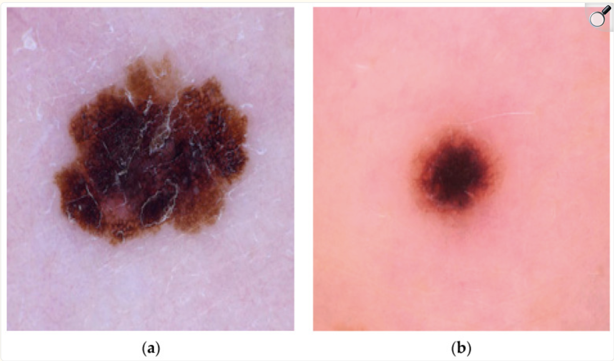
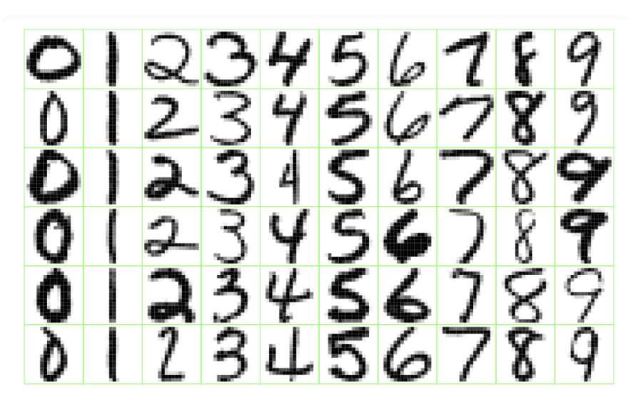

Welcome to Statistical Machine Learning
What is machine learning?
Machine learning is the science of learning patterns from data
The goal is to use data to:
- understand relationships between variables
- make predictions for new observations
- discover hidden structures in data
Examples:
- Predict whether a patient will respond to a treatment
- Predict house prices from characteristics
- Identify spam emails
- Group customers based on purchasing behaviour
Types of Machine Learning Problems
Supervised Learning: Machine is given data and examples of what to predict.
Unsupervised Learning: Machine is given data, but not what to predict.
Reinforcement Learning: Machine gets data by interacting with an environment and tries to minimize cost.
The Basics of Supervised Learning
We have an outcome measurement, \(Y\) (also called the dependent variable, response, or target).
We have a vector of \(p\) predictor measurements, \(X\) (also called the inputs, regressors, covariates, features, or independent variables).
We have training data \((x_1, y_1), (x_2, y_2), ..., (x_n, y_n)\) which are observations (also called instances or realizations) of the measurement \((X,Y)\).
In regression problems, \(Y\) is quantitative (e.g. price, blood pressure).
In classification problems, \(Y\) takes values in a finite, unordered set (survived/died, digit 0-9, cancer class of tissue sample)
Main Tasks in Supervised Learning
On the basis of the training data, we would like to:
- Prediction: accurately predict future outcomes (\(Y\)).
- Estimation: understand how features (\(X\)) affect the outcome (\(Y\)).
- Model Selection: find the best model for predicting the outcome (\(Y\)), or which features (\(X\)) affect the outcome (\(Y\)).
- Inference: assess the quality of our prediction, estimation, and model selection.
Examples of Supervised Learning
Spam Emails Detection
Consider a dataset consisting of 4600 emails sent to an individual.
- Each is labeled as spam or email
The goal is to build a customized spam filter.
We use the relative frequency of 57 words and punctuation marks in the email as features.
| Spam |
0 |
2.26 |
0.02 |
0.54 |
0.51 |
0.01 |
0.28 |
| Email |
1.27 |
1.27 |
0.90 |
0.07 |
0.11 |
0.29 |
0.01 |
Examples of Supervised Learning
Detecting Skin Cancer from Images
Traditionally, melanoma (skin cancer) has been detected through painful and time-consuming biopsies.
Recently new methods have emerged which use computer-aided detection for early melanoma diagnosis.
The machine learning models were trained using image data.

Examples of Supervised Learning
Detect Numbers in a Handwritten Postal Code

Examples of Supervised Learning
Recommender Systems
Examples of Supervised Learning
Speech-to-Text, Personal Assistants, Speech Identification
The Basics of Unsupervised Learning
We have a set of features, \(X\), measured on a sample.
We do not have an outcome variable, \(Y\).
The objective is more ambiguous
- find groups of samples that behave similarly
- find features that behave similarly
- find linear combinations of features with the most variation
It is difficult to assess the quality of the model
Different from supervised learning, but can be useful as a pre-processing step for supervised learning
Examples of Unsupervised Learning
Image Segmentation
Examples of Unsupervised Learning
Clustering
Examples of Unsupervised Learning
Natural Language Processing
The Statistical Learning Problem
Suppose we observe:
\[
(X_1,Y_1), (X_2,Y_2),\ldots,(X_n,Y_n)
\]
where:
- \(X\) = input variables (features, predictors)
- \(Y\) = outcome variable (response)
We assume:
\[
Y = f(X) + \epsilon
\]
where:
- \(f\) is the unknown relationship we want to learn
- \(\epsilon\) represents random error